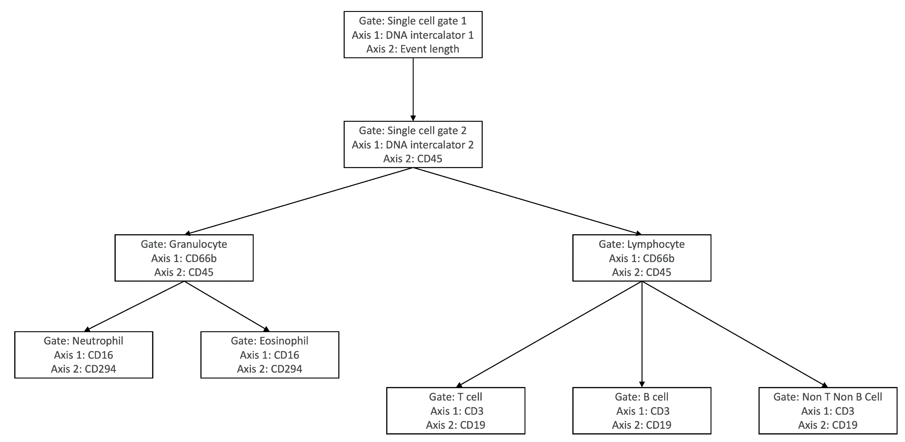
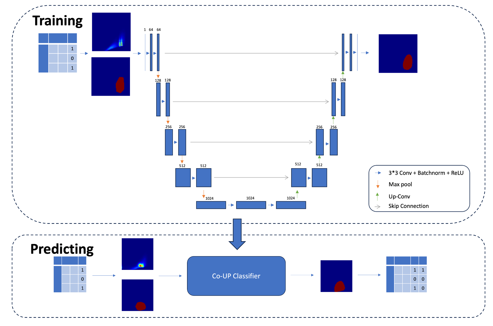

introduction
While I was pursuing my masters' degree in mathematics at the University of Pennsylvania, I joined Shen Lab — a bioinformatics research lab at the Perelman School of Medicine, UPenn. Together with a fellow student researcher, we developed an automated mass-cytometry data preprocessing pipeline. The goal of the Cytometry Autogating Pipeline was to automate the pregating workflow in processing mass-cytometry data. Previously, colleague researchers were manually pregating each data file, and our pipeline fully automated this tedious task.
overview
Mass-cytometry data analysis workflow consists of a sequence of gating procedures, each defined by a pair of proteins.
While most of the subsequent gates are quite consistant, the first two gates (the so-called pregates) vary significantly from subject to subject. The reason behind it is that these pregates inlcude a large amount of erroneous data that originates from defective equipments. Thus, the purpose of the pregates is to filter out (almost) all the erroneous data. Traditional algorithms apply well to the subsequent gates, but the pregates had been determined manually. To tackle this problem, we trained an adapted version of the U-net to perform the pregating procedure, and we later expanded it to a fully automated pipeline. Users simply input the CSV file with raw cytometry readings, and the pipeline generates a gated CSV file along with a comprehensive plot report.
File structure of this project:
Unet
│
├── gen_image_label.py
├── general_utils.py
├── my_dataset.py
├── predict.py
├── train.py
├── visualize.py
│
├── src
│ ├── __init__.py
│ └── unet.py
│
└── train_utils
├── __init__.py
├── dice_coefficient_loss.py
├── distributed_utils.py
└── train_and_eval.py
details
Below is an image description of our cytometry autogating pipeline.
Step 1
The first step is to scale down the raw data. Each raw data CSV file contains approximately 400,000 data entries, which leads to an overwhelming resolution in a truthful representation. Therefore, we need to compress the representation to create manageable training images. After careful calculations, we came up with a linear transformation that compresses gate-1 data into 166×166 images and gate-2 data into 256×256 images. These images are density images, in which the value for each pixel represents the number of cells landing at this pixel after the linear transformation. The masks are compressed accordingly.
Step 2
Once we have the images and masks ready, the next step is to divide them into training/validation/testing datasets. When we were working on this project, we only had access to about 65 data records. Therefore, we divided them into 50 for training, 10 for validation, and 5 for testing. One might think this dataset is too small, but we could argue that we were not trying to distinguish between completely unrelated objects. Instead, the defective readings we were trying to filter out all shared some similar features.
Step 3
The next step is to train the model. During the training process, basic metric information (including loss value, learning rate, dice coefficient, global correct rate, class-wise correct rate, class-wise IOU value, and mean IOU value) will be displayed and logged. After the training completes, the best model is saved.
Step 4
Once we have trained the model, we can start autogating raw cytometry data. This step requires only one line of command! The raw cytometry data is first compressed to a 166×166 image for gate-1 autogating. After gate-1 procedure finishes, the autogating result is applied to the raw data and a subsequent 256×256 image for gate-2 autogating is generated. After gate-2 procedure finishes, the autogating result is again applied to the previous result generated by gate-1 autogating, and the resulting gated CSV file is automatically saved. The result file contains autogating markers for both gates.
The up-scaling process is simple: we first apply the corresponding linear transformation defined above to each cell, and then check whether the transformed pixel is marked or not.
Step 5
After autogating finishes, detailed plot report can be generated with a single command. The image below shows an example output:

possible extensions
If we had more time, we would do the following:
- Modify the U-net loss calculation formula to better rule out an occasional aggregation near the origin.
- Write a graphical user interface for the pipeline.